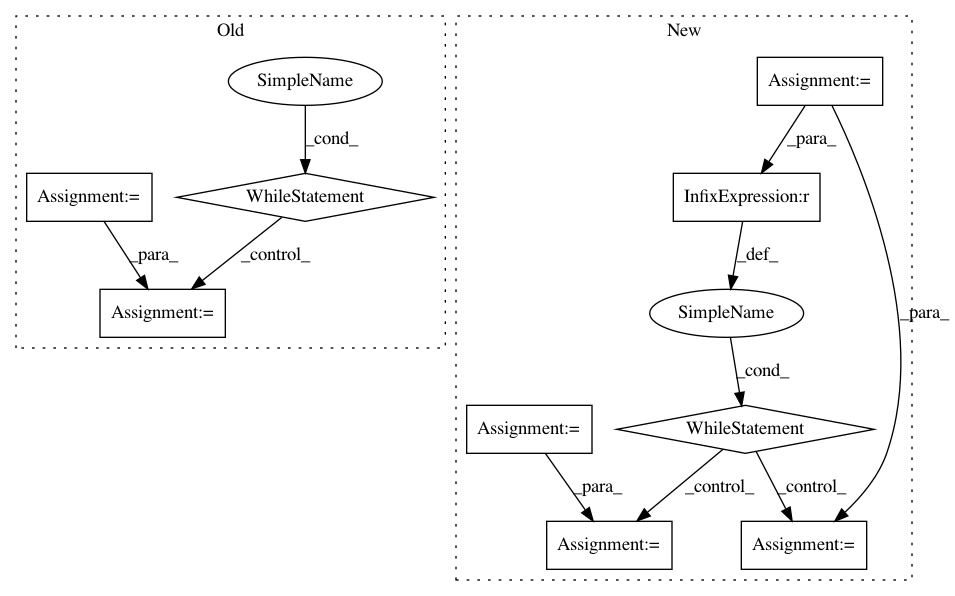

b2bcab711d333442c282cf64c66a9fac2c93218f,rllib/utils/sgd.py,,minibatches,#Any#Any#,48
Before Change
i = 0
slices = []
if samples.seq_lens:
seq_no = 0
while i < samples.count:
seq_no_end = seq_no
actual_count = 0
while actual_count < sgd_minibatch_size and len(
samples.seq_lens) > seq_no_end:
actual_count += samples.seq_lens[seq_no_end]
seq_no_end += 1
slices.append((seq_no, seq_no_end))
i += actual_count
seq_no = seq_no_end
else:
while i < samples.count:
slices.append((i, i + sgd_minibatch_size))
i += sgd_minibatch_size
After Change
i = 0
slices = []
if samples.seq_lens is not None and len(samples.seq_lens) > 0:
start_pos = 0
minibatch_size = 0
idx = 0
while idx < len(samples.seq_lens):
seq_len = samples.seq_lens[idx]
minibatch_size += seq_len
// Complete minibatch -> Append to slices.
if minibatch_size >= sgd_minibatch_size:
slices.append((start_pos, start_pos + sgd_minibatch_size))
start_pos += sgd_minibatch_size
if minibatch_size > sgd_minibatch_size:
overhead = minibatch_size - sgd_minibatch_size
start_pos -= (seq_len - overhead)
idx -= 1
minibatch_size = 0
idx += 1
else:
while i < samples.count:
slices.append((i, i + sgd_minibatch_size))
i += sgd_minibatch_size
In pattern: SUPERPATTERN
Frequency: 3
Non-data size: 9
Instances
Project Name: ray-project/ray
Commit Name: b2bcab711d333442c282cf64c66a9fac2c93218f
Time: 2020-12-20
Author: sven@anyscale.io
File Name: rllib/utils/sgd.py
Class Name:
Method Name: minibatches
Project Name: commonsense/conceptnet5
Commit Name: 2a437760c9344a20a5785f5b4706950c911534b6
Time: 2015-04-08
Author: rob@luminoso.com
File Name: conceptnet5/formats/sql.py
Class Name: EdgeIndexReader
Method Name: random
Project Name: RaRe-Technologies/gensim
Commit Name: 4d8333ab7e2345877df639efe53bab01e932d302
Time: 2017-03-02
Author: jayantjain1992@gmail.com
File Name: gensim/models/wrappers/fasttext.py
Class Name: FastText
Method Name: load_dict